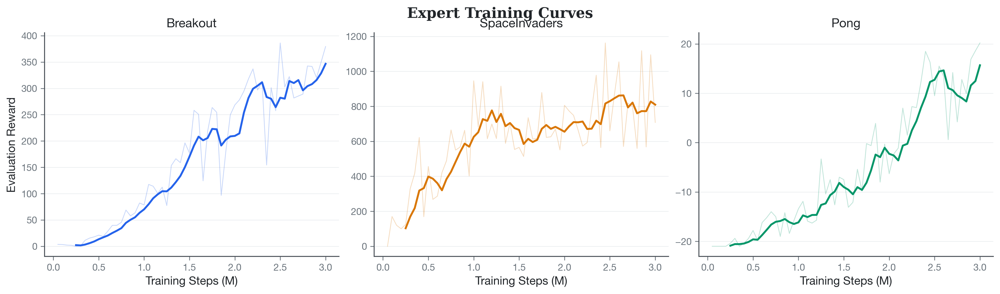
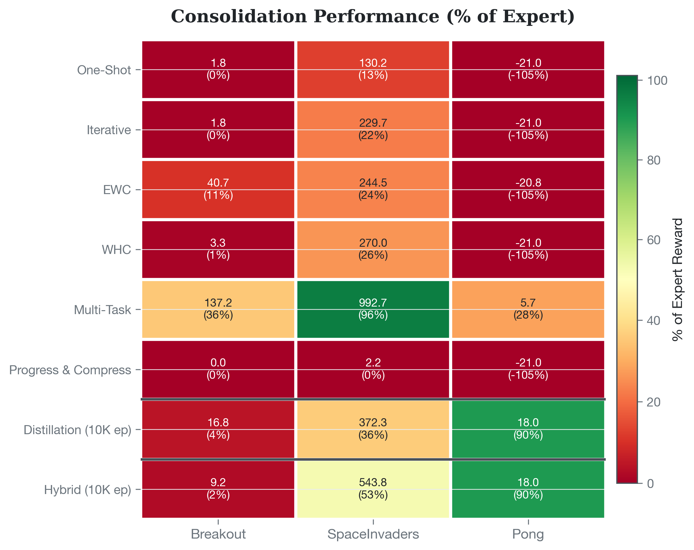
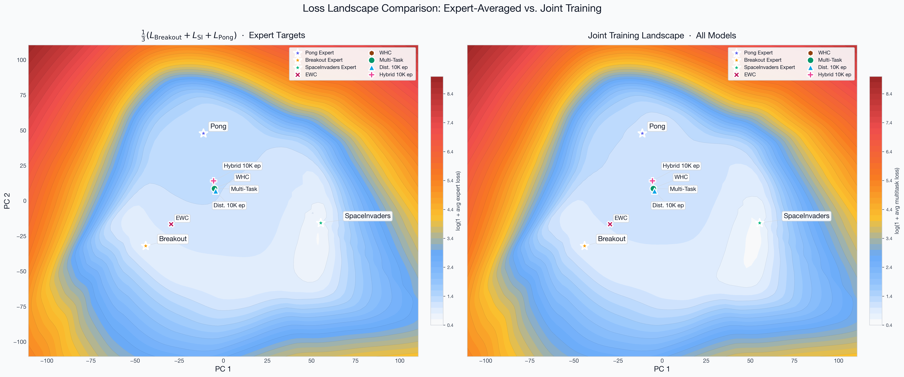
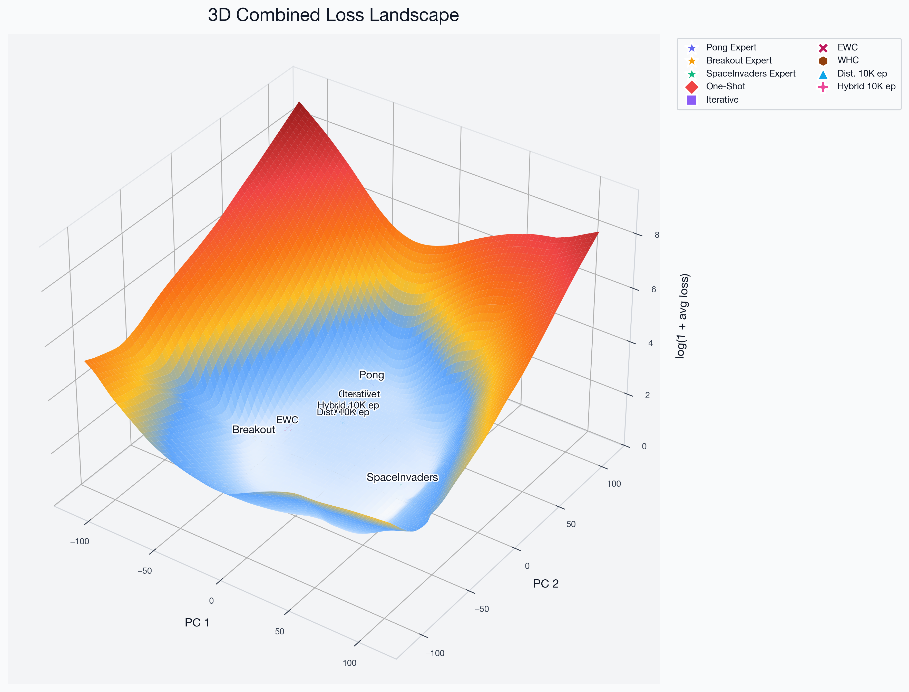
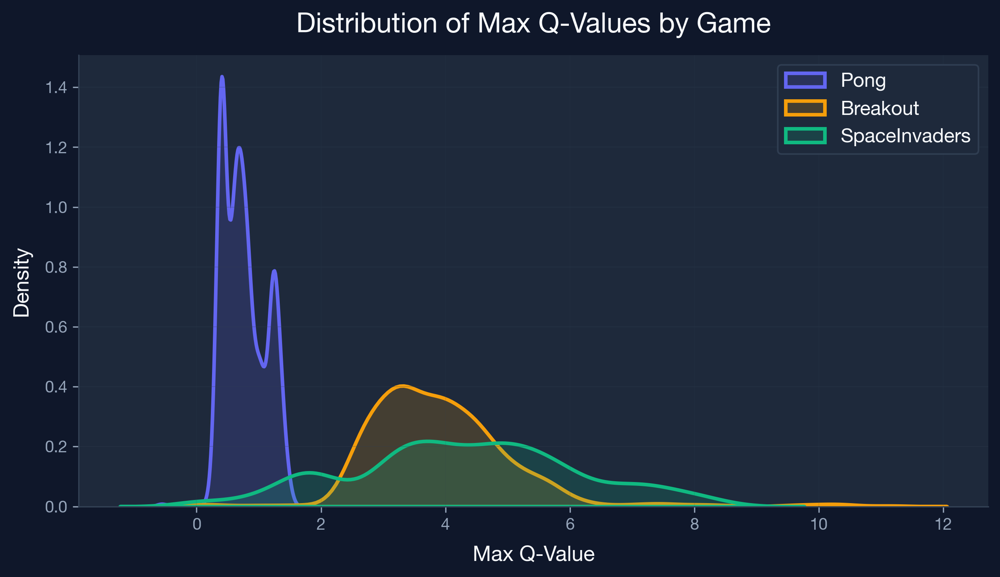
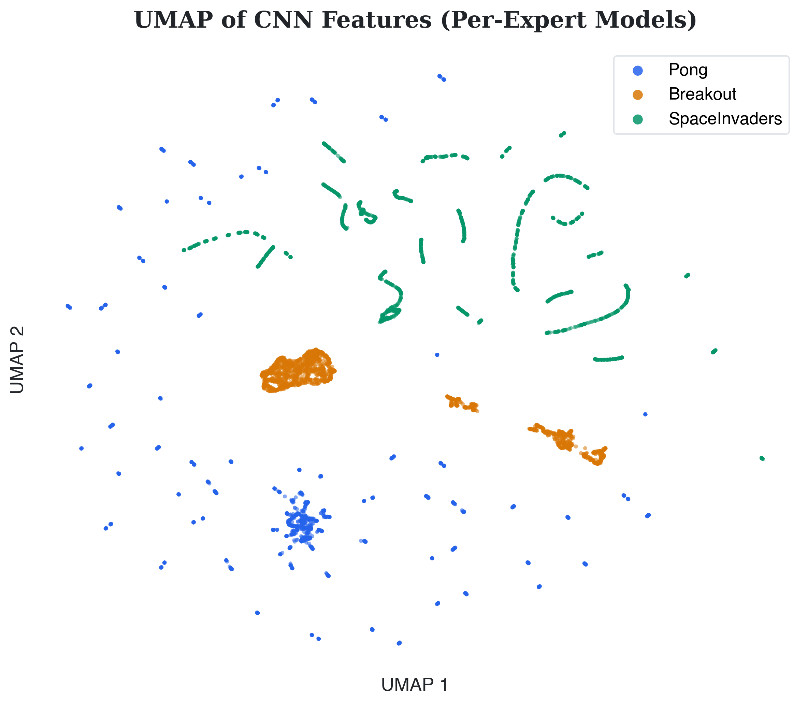

Protik Nag | March 2026 | Continual RL Atari DQN Second-Order
This report summarizes experiments on consolidating three independently-trained Atari DQN experts (Breakout, SpaceInvaders, Pong) into a single multi-task network. We compare five consolidation strategies (Distillation, One-Shot, Iterative, Hybrid, WHC) and two baselines (EWC, Multi-task joint training) drawn from second-order Taylor expansion theory and classical continual learning literature. The Hybrid method achieves the highest average expert retention (30.6%) and is the only method to produce positive Pong scores across all 30 evaluation episodes.
episodic_life=False, clip_reward=False, max 27K steps/episodeTaylor-based consolidation methods (One-Shot, Iterative, Hybrid) initialize from the ensemble-mean anchor:
WHC computes its closed-form solution using Fisher at each expert's own optimum. EWC and Multi-task use their own training protocols.
Trains a student starting from the ensemble mean to match the soft Q-value distributions of all experts using temperature-scaled KL divergence. Q-values are normalized per-task before softmax.
All experts are considered simultaneously at the ensemble-mean anchor. Averaged Fisher and gradient are computed across all tasks, then a single closed-form Taylor correction is applied.
Key detail: With anchor = ensemble mean, the drift centroid d* = 0 (Remark 3.6), so the update simplifies to a pure Newton step. No step size is used.
Extends One-Shot to K rounds. Each round re-expands around the current global model and applies a Taylor correction with geometrically decaying step size.
recompute_fisher=false: Fisher/gradient computed once at the initial anchor and cached for all K stepsTwo-phase approach. Phase 1 provides a Taylor warm start (identical to Iterative above); Phase 2 refines via knowledge distillation starting from the warm-start solution. Theorem 5.2 bounds the improvement in KD convergence proportional to the Taylor approximation quality.
Phase 1 — Multi-Round Joint Taylor (identical to Iterative above):
Phase 2 — Knowledge Distillation Refinement:
Closed-form solution using a surrogate loss formed by Hessian-weighted quadratic approximations expanded at each expert's own optimum. Placing expansions at the true optima eliminates the gradient term and minimizes the Taylor remainder.
Sequential continual learning with a Fisher-weighted L2 penalty anchoring parameters toward previous task solutions. Trained sequentially on the task order; the EWC penalty accumulates across tasks.
scripts/train_ewc.py
Single DQN trained simultaneously on all tasks via round-robin environment stepping and random task sampling.
Not subject to catastrophic forgetting; serves as an oracle upper bound.
Trained via scripts/train_multitask.py for 6M total steps (~2M per task).
All consolidation methods evaluated with 30 episodes per game, seed 42, deterministic policy.
| Method | Breakout | SpaceInvaders | Pong | Avg Retention |
|---|---|---|---|---|
| Expert (upper bound) | 386.0 ± 35.0 | 1030.8 ± 257.4 | 19.9 ± 0.9 | — |
| One-Shot | 2.4 ± 4.0 | 128.7 ± 83.8 | −21.0 ± 0.0 | −30.8% |
| Iterative | 3.0 ± 4.2 | 215.0 ± 119.5 | −21.0 ± 0.0 | −28.0% |
| Distillation | 5.4 ± 6.5 | 33.7 ± 19.4 | −15.5 ± 3.3 | −24.4% |
| EWC | 40.7 ± 4.0 | 244.5 ± 64.4 | −20.8 ± 0.4 | −23.4% |
| Hybrid (ours) | 6.1 ± 4.0 | 154.2 ± 72.8 | 15.0 ± 6.6 | 30.6% |
| WHC | Checkpoint available; evaluation pending | |||
| Multi-task | Training complete; evaluation pending | |||
Retention = consolidated reward / expert reward. Negative values occur when consolidated scores below the random-play floor (Pong minimum is −21).
| Method | Breakout | SpaceInvaders | Pong |
|---|---|---|---|
| One-Shot | 0.6% | 12.5% | −105% |
| Iterative | 0.8% | 20.9% | −105% |
| Distillation | 1.4% | 3.3% | −78% |
| EWC | 10.5% | 23.7% | −104% |
| Hybrid | 1.6% | 15.0% | 75.3% |






The Hybrid method combines complementary strengths:
One-Shot and Iterative both score −21 on Pong (worst possible). The diagonal Fisher approximation captures parameter importance but cannot represent cross-parameter interactions critical for Pong's precise paddle control. The ensemble-mean initialization also dilutes Pong-specialized features since Breakout and SpaceInvaders dominate the Fisher spectrum (more frequent Q-value variation, larger replay buffers by effective diversity).
EWC is the best-performing method on Breakout (10.5%) and SpaceInvaders (23.7%), benefiting from its sequential training that never destroys the first-task solution before registering the penalty. However, by the time training reaches Pong (Task 3), the Fisher penalty protecting Breakout and SpaceInvaders dominates the loss landscape and prevents meaningful adaptation to Pong. The sequential nature of EWC creates an inherent asymmetry: earlier tasks are protected more strongly than later tasks.
Starting from the ensemble mean, pure KD must traverse a larger loss landscape. SpaceInvaders retention degrades to 3.3% at 10,000 epochs, while Pong shows a non-monotone trajectory (reward decreased from −6.4 at 50 epochs to −15.5 at 10,000 epochs), suggesting that the ensemble-mean initialization is simply too far from the expert manifold for gradient descent to recover without the Taylor warm start.
All Taylor consolidation methods retain < 2% of expert Breakout performance. Breakout requires highly specialized feature activations for paddle-ball tracking that are destroyed by ensemble averaging. EWC's 10.5% retention confirms the bottleneck lies in the initialization strategy, not the consolidation algorithm — EWC never averages the weights and thus preserves the Breakout solution more directly.
scripts/evaluate.py on consolidated_whc.pt to complete the method comparison. WHC's property of computing Fisher at each expert's own optimum may improve on the Taylor methods for Pong.